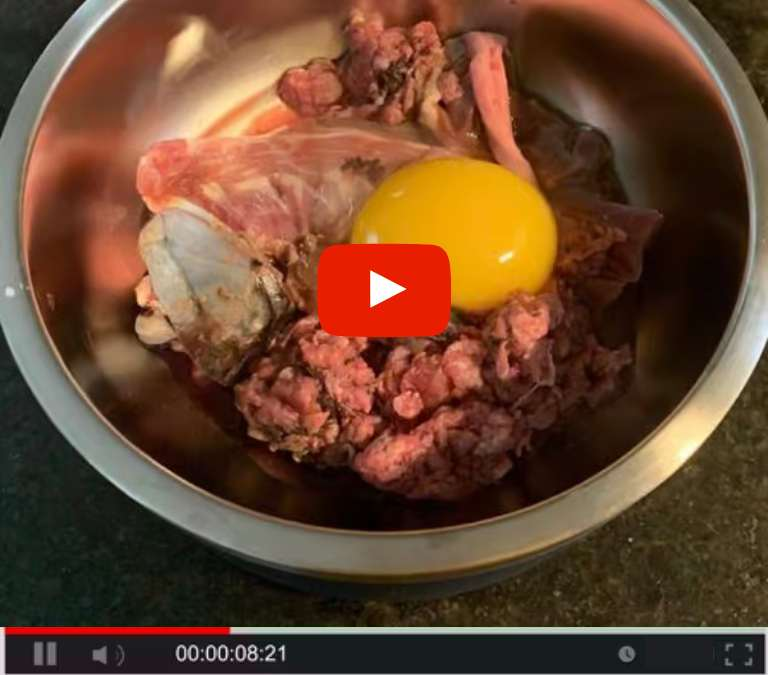

Pet Health Crisis for Dogs!
Veterinarian Dr. Zupanc reveals the hidden dietary risks for American dogs and how it's harming their health and vitality nationwide.
American dogs are facing health issues at an alarming rate.
In the last 20 years, the number of dogs on special diets has quadrupled.
But instead of improving, dogs' health levels have DROPPED! In some cases, significantly.?
And with this decline in health has come a noticeable decrease in energy and overall wellness. The fact is, More dogs than ever are facing lifestyle-related health issues along with reduced vitality, weight gain, and even decreased life expectancy. But why now? What's been happening over the past 20 years to cause such a significant decline?
Simply put, this crisis has been brewing for a while.
We are constantly exposing our dogs to hidden dietary risks in their environment that attack their well-being... and now we've reached a breaking point - a National Health Crisis for Dogs. Just changing their food isn't the solution.
In fact, as I'll demonstrate, it could actually make your dog's health WORSE.
Informed veterinarians will acknowledge this, but apart from these few in the know, virtually no one is discussing it.
The average pet owner won't even find this research through internet searches or social media.
It's that well-concealed.
But after decades of studying countless veterinary journals, I finally uncovered the truth. That's why I'm here to clarify and reveal the real reason American dogs are unknowingly suffering a decline in health...
My name is Dr. Zupanc.
I'm a board-certified veterinarian specializing in natural solutions to dog health issues.
And today, I'm going to show you how to protect your dog from the hidden dietary risks that rob them of their vitality and health.
You'll learn how to shield your dog from the dangers they're unwittingly being exposed to with a next-generation dietary solution...
"My next-generation dietary solution is the most effective treatment I offer. When owners try it, they see amazing results in their pets. Often expressing their gratitude to me." Dr. Zupanc